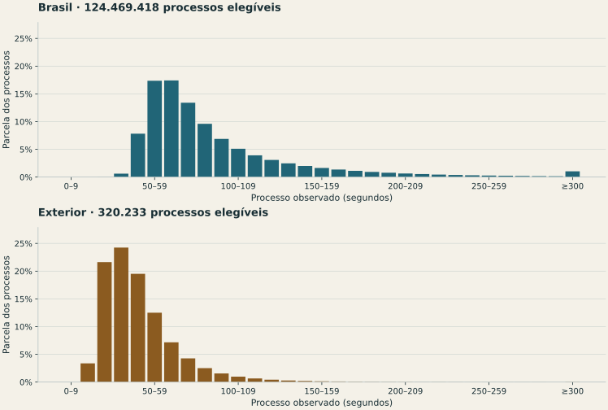
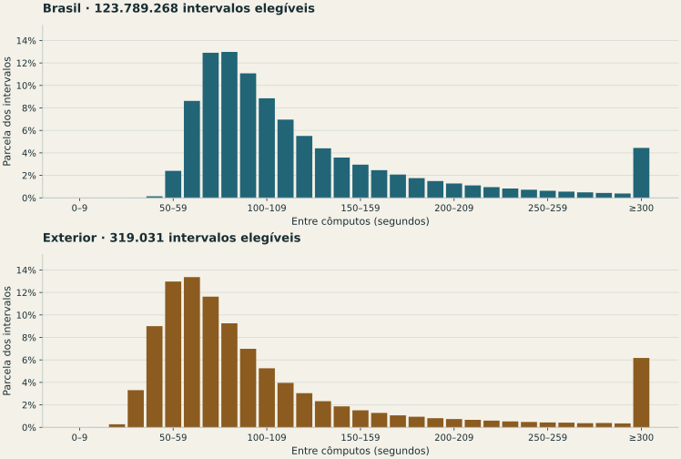

Brasil
91,0 segundos em média
- Metade durou até
- 74 s
- 90% duraram até
- 151 s
124.469.418 processos elegíveis.
Primeiro turno de 2026 · Logs oficiais das urnas
Quanto dura o processo do mesário ao cômputo, como varia a cadência entre atendimentos e quais ocorrências ficaram registradas. A leitura de quase meio milhão de logs, em gráficos e critérios verificáveis.
Explorar os 25 diagnósticos ↓01 / Ritmo da votação
A medida principal começa na digitação concluída do identificador pelo mesário e termina no voto computado. Inclui a identificação eletrônica e a votação. Conferência de documentos, fila e digitação anterior ao registro não têm início cronometrável neste log.
91,0 segundos em média
124.469.418 processos elegíveis.
45,4 segundos em média
320.233 processos elegíveis.
Régua comum em segundos: ● metade dos ciclos (mediana) · | média · ○ 90% dos ciclos (percentil 90).
Brasil e exterior são descritos separadamente: o número de cargos difere. Nas regras de atipicidade, a comparação é com a mesma UF, modelo de urna e quantidade de confirmações de cargo.

0 seções no processo por tipo; 0 na cadência; 0 em trechos de dez intervalos. Contagens se sobrepõem. Conferir o processo rápido →
A cadência inclui o processo seguinte, a transição entre pessoas e eventuais esperas. Não é duração individual. Comparamos apenas cômputos consecutivos completos da mesma urna e sessão, sem atravessar reinícios ou ciclos não reconstruídos.
130,2 segundos em média
123.789.268 intervalos elegíveis.
118,9 segundos em média
319.031 intervalos elegíveis.

É uma parte do processo, insuficiente sozinha para medir o atendimento do mesário. Não se somam medianas das etapas para obter a mediana do processo: cada duração completa é reconstruída diretamente.
68,4 segundos em média
124.627.458 ciclos completos elegíveis.
17,9 segundos em média
320.233 ciclos completos elegíveis.
Do identificador digitado pelo mesário à liberação do eleitor. É a etapa eletrônica observável, sem toda a conferência documental.
Da habilitação ao voto computado. Ciclos parcialmente suspensos ficam fora da duração de voto completo.
Entre dois cômputos consecutivos da mesma urna e sessão. Inclui ociosidade, identificação e votação. Não identifica fila nem paralisação.
| Território | Confirmações de cargo | Ciclos | Média (segundos) |
|---|---|---|---|
| Brasil | 1 | 165.335 | 12,6 |
| Brasil | 6 | 124.459.678 | 68,5 |
| Brasil | 7 | 2.445 | 75,9 |
| Exterior | 1 | 320.233 | 17,9 |
Relógio inconsistente, modelos mistos ou divergentes e ciclos incompletos impedem a comparação correspondente. Os valores descrevem os ciclos completos elegíveis nas seções lidas. Não há associação entre horário, identidade pessoal e opção de voto.
02 / Identificação do eleitor
A habilitação biográfica e a categoria “sem biometria” são contagens distintas do BU. Misturá-las produziria uma taxa enganosa.
seções. A taxa divide biográficas por biométricas + biográficas.
Ver seções no mapa →seções. A taxa divide a categoria sem biometria pelo comparecimento.
Ver seções no mapa →Os percentuais do gráfico usam todos os presentes nas seções reconciliadas; as regras acima usam seus próprios denominadores. Procedimento sem reconhecimento biométrico não identifica, por si só, voto irregular.
A referência é a mediana de seções da mesma UF, município, zona e modelo, com pelo menos 30 seções elegíveis e denominador de 50 pessoas por seção. O corte exige quatro escalas robustas e excesso de pelo menos 10 pontos percentuais. Cadastro, idade e qualidade das digitais não são controlados individualmente.
| Território | Seções reconciliadas | Biométricas | Biográficas | Sem biometria |
|---|---|---|---|---|
| Brasil | 497.885 | 109.648.674 | 8.342.036 | 6.940.073 |
A decomposição acima só inclui as seções em que as três categorias e o comparecimento fecharam entre log e BU. 1.281 BUs não trazem os campos de biometria: seus valores são desconhecidos, nunca zero.
03 / 12 critérios históricos + 25 dos logs
Escolha um grupo, veja a frequência e abra a regra. Cada diagnóstico leva diretamente às seções correspondentes no mapa.
117.016 seções registraram esse recurso de continuidade. Isso ajuda a explicar o volume de registros operacionais; não mede defeitos nem gravidade. As contagens se sobrepõem e não se somam à pontuação histórica.
25 diagnósticos
Barras em escala comum de 0 a 25% das seções avaliáveis em cada regra. Ocorrências raras continuam legíveis pelo número; barra curta não significa pouca importância.
Processo do mesário ao cômputo, cadência e pausas.
Regra: Mediana da digitação concluída do identificador ao cômputo abaixo da referência menos 4 escalas robustas e menor que metade dela, em ao menos um tipo de habilitação. Mesma UF, modelo, cargos e tipo; ≥30 processos por tipo e ≥90% dos ciclos completos com início inequívoco.
O que conferir: Conferir cobertura, tipo biométrico/biográfico/sem biometria, referência e ata. Não somar medianas das etapas nem vincular horários a pessoas.
É o trecho eletrônico observado, sem fila, conferência em papel, digitação anterior ao registro ou ligação presumida entre tentativas canceladas. Três tipos são examinados: seleção exploratória, sem significância confirmatória ou prova de automatização.
Regra: Mediana dos intervalos consecutivos abaixo da referência menos 4 escalas robustas e menor que metade dela; ≥30 intervalos entre ciclos completos da mesma urna, sessão e cargos. Referência da mesma UF, modelo e cargos.
O que conferir: Ler junto ao processo observado por tipo e aos registros de interrupção. Intervalos não atravessam reinícios nem ciclos parciais ou não reconstruídos.
Inclui transição, espera, mesário e votação. A mistura dos tipos de identificação e o movimento da seção ainda afetam a comparação; não é tempo individual de atendimento.
Regra: Menor média móvel de 10 intervalos (11 cômputos) abaixo da referência menos 4 escalas robustas, de metade da referência e de metade da mediana da própria seção. ≥30 intervalos; pares por UF, modelo, cargos e faixas de 100 intervalos (500+ agrupados).
O que conferir: Conferir continuidade, tamanho da base, tipos de identificação, relógio e ata. O agregado público não expõe a sequência dos eleitores.
A referência compara mínimos de janelas, não o mínimo com uma média nacional. Janelas sobrepostas e seleção entre muitas seções exigem conferência; o limiar é exploratório.
Regra: Mediana abaixo da referência menos 4 escalas robustas e menor que metade dela; ≥30 ciclos completos do mesmo número de cargos.
O que conferir: Conferir os ciclos completos, o número de cargos e a ata, sem associar horários a pessoas ou opções de voto.
Rapidez não identifica voto automatizado. Familiaridade, idade e quantidade de cargos afetam o tempo.
Regra: Mediana acima da referência mais 4 escalas robustas e maior que 1,5 vez a referência; ≥30 ciclos completos.
O que conferir: Conferir apoio de acessibilidade, orientação da mesa, teclado e ocorrências da ata.
Dificuldade de uso, acessibilidade e perfil etário podem explicar a diferença.
Regra: Mediana entre identificador digitado e habilitação acima da referência mais 4 escalas robustas, com excesso ≥20 segundos e ao menos 30 etapas observadas.
O que conferir: Conferir dificuldades de leitura das digitais, cadastro e atendimento documentado na ata.
O log mede a etapa eletrônica após a digitação. Não mede o tempo total na fila.
Regra: Maior intervalo entre dois votos computados consecutivos ≥1.800 segundos, com relógio sem recuo ou ajuste identificado.
O que conferir: Conferir movimento do local e ocorrências da ata no intervalo, sem inferir quem votou.
Intervalo inclui ociosidade, identificação e votação. Não mede fila nem prova paralisação.
Taxas comparadas com seções da mesma zona e modelo.
Regra: Biográficas / (biométricas + biográficas) acima da referência mais 4 escalas robustas e ≥10 pontos percentuais acima; denominador ≥50.
O que conferir: Conferir tentativas de reconhecimento, habilitações biográficas e documentação da mesa.
A comparação na mesma zona e modelo não controla idade, ocupação ou qualidade do cadastro. Procedimento previsto não é voto irregular.
Regra: Sem biometria / comparecimento acima da referência mais 4 escalas robustas e ≥10 pontos percentuais acima; comparecimento ≥50.
O que conferir: Comparar a cobertura do cadastro da seção e do local antes de atribuir a taxa à operação da urna.
Diferenças de cadastramento biométrico são uma explicação possível. Não confundir com falha de reconhecimento.
Suspensão, reinício, energia e erros registrados.
Regra: Mensagem LOGD de urna ligada após cômputo e antes do encerramento na mesma urna, mesmo sem nova partida do VOTA reconhecida.
O que conferir: Conferir os registros de partida, recuperação e ata. Uma ocorrência relatada pode não aparecer como ERRO/FATAL.
Reinício de sistema e de aplicativo podem registrar o mesmo episódio e não somam evidências independentes. Não identifica a causa física.
Regra: Ao menos um par de início e término de inspeção, na mesma urna e sessão, dura ≥300 segundos; relógio válido.
O que conferir: Conferir motivo e ata; inspeção não é sinônimo de reinicialização. Todas as inspeções aparecem na consulta da seção, inclusive as breves.
A janela pode incluir espera pela confirmação no terminal; não cronometra trabalho físico de inspeção. É procedimento também rotineiro. Cinco minutos é corte de triagem, não duração ilegal ou defeito.
Regra: Retornos à digitação durante tentativa de suspensão: ≥3 eventos e taxa por 100 cômputos acima da referência mais 4 escalas robustas e excesso ≥5 eventos por 100. ≥50 cômputos e seções elegíveis de mesma UF, modelo e cargos.
O que conferir: Conferir acessibilidade, avisos de inatividade, apoio prestado e ata. Não confundir retorno da digitação com reinício da urna.
Conta eventos, não pessoas nem votos suspensos. O mesmo atendimento pode gerar vários avisos; dificuldade de uso é explicação possível.
Regra: Cancelamentos de habilitação: ≥3 eventos e taxa por 100 cômputos acima da referência mais 4 escalas robustas e excesso ≥5 eventos por 100. ≥50 cômputos e seções elegíveis de mesma UF, modelo e cargos.
O que conferir: Conferir a sequência de habilitação e a ata. Tentativas ambíguas não recebem duração completa presumida.
Pode ser correção ou desistência antes de votar. Pedido de cancelamento pode cruzar com captura ainda em andamento; não implica voto cancelado.
Regra: Ao menos 3 suspensões e taxa ≥1% dos computados mais suspensões sem voto.
O que conferir: Conferir motivo na ata, votos parciais e nulos por suspensão, preservando o sigilo.
Suspensão pode ocorrer por abandono ou dificuldade. Voto parcial e suspensão sem voto são eventos diferentes.
Regra: Ao menos uma nova partida do VOTA depois de um voto computado e antes do encerramento observado.
O que conferir: Conferir hora, motivo, continuidade das contagens e eventual troca de urna na ata.
Reinício pode ser recuperação normal. O evento não demonstra perda ou alteração de votos.
Regra: Ao menos uma mensagem explícita de operação com bateria interna no dia da votação.
O que conferir: Conferir fornecimento de energia e eventuais interrupções de atendimento na ata.
A bateria é um recurso de continuidade. O registro não mede duração da falta de energia nem prova defeito.
Regra: Ao menos um evento classificado ERRO ou FATAL pelo log no dia da votação.
O que conferir: Conferir mensagem, subsistema, recuperação e ata; erro registrado não é necessariamente erro sem solução.
ALERTA não entra aqui: inclui erro de digitação normal. Gravidade e recuperação exigem leitura do evento original.
Assinatura, relógio, contagens e fragmentos do pacote.
Regra: Mensagem de assinatura com [FALHA], [ERRO] ou indicação de inválida.
O que conferir: Preservar o original e solicitar conferência de assinaturas, mídias, certificados e providências à Justiça Eleitoral.
É o que o software registrou. Esta leitura não é validação criptográfica independente do pacote.
Regra: Horário retrocede dentro do mesmo arquivo e urna, ou há mensagem explícita de ajuste, alteração ou erro do relógio.
O que conferir: Conferir ajuste do relógio, continuidade de arquivos e ata antes de interpretar qualquer duração.
Carimbos fora de ordem podem decorrer de gravação assíncrona ou relógio. Por cautela, invalidam os tempos da seção nesta análise, mesmo se o recuo for de apenas um segundo.
Regra: Voto computado sem habilitação reconhecida, habilitação sobreposta, ciclo aberto ou interrompido pelo reinício.
O que conferir: Conferir todos os membros do pacote, logs da urna substituída e mensagens não reconhecidas pelo leitor.
Pode ser fragmento ausente, contingência ou limitação do leitor. Não significa eleitor sem identificação.
Regra: Quantidade de eventos de voto computado ou ciclos reconstruídos difere do comparecimento no BU do mesmo hash.
O que conferir: Conferir identidade, versão, contingência, todos os arquivos do log e BU correspondente.
Discrepância documental ou de extração pede reconciliação. Não demonstra alteração do resultado.
Regra: Categorias dos ciclos computados não reproduzem as três contagens do BU, ou há tipo não reconhecido.
O que conferir: Conferir vocabulário do modelo da urna, ciclos suspensos e totais do BU antes de comparar taxas.
Pode revelar uma mensagem ainda não coberta pelo leitor. A seção fica fora da comparação de biometria.
Regra: Há voto computado, mas nenhum término da geração da zerésima anterior ao primeiro cômputo foi localizado.
O que conferir: Conferir zerésima impressa, ata, log anterior e eventuais procedimentos de contingência.
Ausência no pacote lido não prova ausência da emissão ou impressão. Pode faltar arquivo de origem.
Regra: Linha com estrutura inválida ou mensagem crítica com uma ou duas substituições de caracteres, mantendo comprimento e prefixo reconhecíveis de habilitação, cômputo ou espera de identificador.
O que conferir: Comparar os bytes originais e os fragmentos do pacote; solicitar conferência da cadeia de integridade e dos registros de contingência.
Sinal de qualidade do registro ou vocabulário não reconhecido. O leitor não corrige o texto por aproximação nem deduz alteração de votos ou causa física.
Regra: Há identificadores de urna com fase incompatível, identidade de seção divergente ou metadados insuficientes. Seus eventos foram excluídos das contagens.
O que conferir: Conferir município, zona, seção, fase e número interno nos fragmentos originais e nos registros de contingência, sem misturar contagens de seções diferentes.
Pode ser fragmento de outra seção, contingência, metadado ausente ou texto malformado. Eventos excluídos não são atribuídos à seção consultada.
Nenhum diagnóstico corresponde à busca. Limpe o texto ou escolha outro grupo.
Essas 25 regras são triagem exploratória. Não estimam probabilidade de fraude. ALERTA não é contado como ERRO: pode ser uma pergunta do sistema ou digitação inválida.
O processo observado exige início inequívoco em pelo menos 90% dos ciclos completos, com no mínimo 30 processos. Cada tipo de habilitação é comparado separadamente (biométrica, biográfica ou sem biometria), com ≥30 processos por tipo e ≥30 seções da mesma UF, modelo e cargos. Categorias não reconciliadas com o BU não alimentam essa comparação.
A cadência usa ≥30 intervalos. O trecho rápido procura dez intervalos consecutivos (onze cômputos) e compara seu mínimo com mínimos de pares também agrupados por volume: 0–99, 100–199, 200–299, 300–399, 400–499 e 500+ intervalos. Também exige menos da metade da mediana da própria seção. Identificação repetida ou cancelada não recebe início presumido. Uma tentativa encerrada e outra iniciada depois não são atribuídas à mesma pessoa; a cadência preserva o tempo entre cômputos que pode conter essas tentativas. Essas proteções reduzem artefatos; não controlam idade, acessibilidade, movimento ou toda diferença de operação.
O corte principal usa a mediana de referência mais ou menos quatro escalas robustas e uma diferença mínima. As alternativas usam três e cinco. Escala robusta: 1,4826 vezes a mediana dos desvios absolutos, com piso de três segundos, um ponto percentual na biometria ou um evento por 100 cômputos nas retomadas e cancelamentos. A própria seção participa da referência.
| Escalas robustas | Seções com algum diagnóstico | Processo rápido | Cadência rápida | Trecho rápido | Retomadas acima da referência |
|---|---|---|---|---|---|
| 3 | 173.581 | 0 | 0 | 0 | 9.954 |
| 4 | 170.146 | 0 | 0 | 0 | 5.501 |
| 5 | 167.582 | 0 | 0 | 0 | 2.716 |
As colunas usam a mesma cobertura. São sensibilidades de triagem, sem nível de significância nem confirmações independentes.
04 / Conferência dos registros
Em 499.166 seções, a contagem reproduz o comparecimento do BU. Restam 10 discrepâncias documentais ou de reconstrução para conferir. Elas não demonstram alteração de votos.
Conferência solicitada por leitor · Santos / SP
O arquivo registra uma partida antes da abertura e nenhum reinício ou ERRO/FATAL durante a votação. Há sete inspeções, nove retomadas após inatividade e um cancelamento de habilitação. Os 275 cômputos fecham com o BU, inclusive nas três categorias de identificação.
Carimbos do log em 04/10/2026. Nenhum horário de voto individual é exibido.
O que ficou de fora da busca anterior: inspeções, cancelamentos e retomadas da digitação eram mensagens informativas. Não apareciam no filtro de ERRO/FATAL. Agora a ficha mostra esses registros mesmo quando não ultrapassam os limiares de triagem.
O relato está vinculado à seção correta, mas sem horário. O log não confirma o reinício; para cruzar o episódio, falta a ata. Ausência de registro não descarta ocorrência fora do log.
A orientação oficial de 2026 prevê inspeções periódicas acompanhadas pelos fiscais presentes. Isso é uma explicação possível para a convocação, não a identificação do episódio relatado.
Abrir a ficha completa da seção → · Original oficial
SHA-256: 4873b29f6fba577ab83c6360e6a4efe4b2986f3e206d3447b1388549ad704d1a
Os 19 eventos estão em 18 seções. SUCESSO posterior significa que o software registrou recuperação para o mesmo arquivo e urna. Esta análise lê as mensagens; não substitui a validação criptográfica independente.
Há 10.792 eventos ERRO/FATAL no dia. Nas 498.895 seções com janela delimitável, 8.423 ocorreram entre a primeira habilitação e o último cômputo e 2.353 fora desse intervalo. Um evento não equivale a uma seção ou a uma falha sem recuperação.
Exemplos escolhidos para mostrar situações distintas, sem ranking de gravidade. Cada ficha liga a interpretação ao original e ao hash arquivado.
O arquivo de Santos, zona 273, seção 214, registra uma partida do sistema antes da abertura e nenhuma nova partida durante a votação. Não há ERRO/FATAL. Há sete inspeções de 14 a 41 segundos, nove retomadas da digitação após inatividade e um cancelamento de habilitação às 10:43:10. Os 275 cômputos e as categorias 215 biométricas, 32 biográficas e 28 sem biometria fecham com o BU. A mediana é 73 s do identificador ao cômputo, 52 s após a habilitação e 97 s entre cômputos.
Um relato de problema seguido de reinício motivou esta revisão. O arquivo consultado não confirma o reinício e não permite descartar uma ocorrência fora do registro. Inspeção pode convocar fiscais e é procedimento previsto; sem horário aproximado e ata não é possível identificar qual episódio foi observado. A busca anterior omitia inspeções e retomadas por não serem ERRO/FATAL.
SHA-256: 4873b29f6fba577ab83c6360e6a4efe4b2986f3e206d3447b1388549ad704d1a
A verificação de /dsk/fe/estatico/infomidia.vsc registrou ERRO às 06:56:39 e SUCESSO às 07:00:19. As três categorias de habilitação e o comparecimento fecham com o BU. O sucesso posterior faz parte do registro e não deve ser omitido.
São mensagens do próprio sistema, sem validação criptográfica independente nesta análise.
SHA-256: fa45166090c4d8eaa3166e1ff0daa3b35c79094b6d206f14ba5d4a5630db1118
O pacote reúne 135 cômputos de uma urna e 136 da outra. A identidade da primeira está registrada na véspera, quando ela já estava ligada. A leitura conjunta reconcilia 271 cômputos, 271 ciclos e as três categorias com o BU.
Uma contagem baseada só no arquivo final perderia o fragmento anterior. Este exemplo mostra por que é preciso abrir o pacote completo.
SHA-256: 5dfc3f9c0c9741335d0b047c364801476c94b385d4abf0683a2be35e5aacfa97
O BU registra 247 comparecimentos; os dois fragmentos fornecidos registram 232 cômputos. Os registros do dia começam às 10:18 e às 10:53; há mensagem de contingência executada com sucesso. Os 15 eventos anteriores não foram localizados no pacote consultado.
É uma diferença documental a reconciliar com os registros anteriores e a ata. Não identifica votos adicionados ou retirados.
SHA-256: 4dce5d50742734d540b30f68a66a2fe2149f881cff471935113f7e8455540bf7
O arquivo contém literalmente “Eleitor foi ha`ilitado”, além de outras mensagens com caracteres inesperados. Os 311 eventos exatos de cômputo fecham com o BU; o leitor reconstrói 309 ciclos, pois não corrige eventos por semelhança.
Os bytes coincidem com o SHA-256 arquivado. Isso localiza a limitação no documento consultado, sem identificar sua causa física nem demonstrar alteração de votos.
SHA-256: fb352edc2cf14a6f4616574ec402ca87f5507860c7dd52248cd3a4df48f84bfa
O registro passa de 08:32:21 para 07:36:00 e contém a aplicação de ajuste de data e hora. Preservando a ordem de escrita do arquivo, os 260 cômputos, os 260 ciclos e as categorias de habilitação fecham com o BU. As durações ficam fora das comparações.
Ordenar esses eventos apenas pelo carimbo criaria um ciclo incompleto artificial. A inconsistência do relógio exige separar a confiabilidade dos tempos da reconciliação das contagens.
SHA-256: 623c65e5f80e0f76ca42c08f1d4ffd0a7af4b37290b4975b2d5218167f486bcb
O pacote da seção 175 inclui um fragmento identificado como seção 181. Os 100 cômputos desse identificador foram excluídos; não podem ser atribuídos à seção 175. Os dois identificadores compatíveis com a seção 175 somam 136 cômputos, contra 272 comparecimentos no BU.
A diferença restante pede os registros corretos das urnas e da contingência. Misturar o fragmento de outra seção não reconcilia o documento nem demonstra transferência de votos.
SHA-256: 8e10d4a80b55eb6da3e35ee3948c8b08e5b26e205454b214fc7e3c948bae6e2f
05 / Cobertura e limites
Cada linha representa uma condição própria, não etapas cumulativas. Uma seção pode servir para contagem e ficar fora da comparação de tempos ou de biometria.
41 não instaladas e 31 com boletim do sistema de apuração. Estas últimas têm registros logSA, de outra categoria, que não passam por este leitor de ciclos VOTA. Os links estão nas fichas. Ausência de análise não significa zero ocorrências.
Reconsultamos os metadados das 92 seções sem nome de log no catálogo antigo. 41 estavam marcadas como não instaladas; 31 tinham boletins do sistema de apuração, sem log de votação (VOTA) no hash arquivado. Os metadados desses casos listam logSA, uma categoria distinta, não processada neste leitor; o endereço está na ficha da seção. As 20 que antes retornavam 404 agora têm BU e log: 20 já estão incluídas nesta análise, com BU suplementar e fonte na ficha. O banco histórico foi preservado. Respostas, endereços e hashes da reconsulta.
Recuperados: 499.176; SHA-256 igual ao da coleta anterior: 499.062. Sem hash anterior, a comparação fica desconhecida. Publicação em 16/10/2026 às 03:59 (Brasília).
| Situação | Seções |
|---|---|
| Log lido e vinculado ao BU | 499.176 |
| Catálogo anterior sem nome de log | 0 |
| Seção marcada como não instalada no catálogo oficial | 41 |
| BU do sistema de apuração sem log VOTA no hash arquivado | 31 |
| Catálogo sem hash de transmissão | 0 |
| Download ainda pendente | 0 |
| Falha de download após tentativas | 0 |
| Arquivo não localizado no endereço oficial (404) | 0 |
| Resposta recebida não é ZIP | 0 |
| SHA-256 difere do original arquivado | 0 |
| Log recuperado sem BU disponível para reconciliação | 0 |
| Aguardando a versão atual do leitor | 0 |
| Pacote não interpretado pelo leitor | 0 |
| UF | Catalogadas | Logs lidos | Contagem confere | Biometria confere | Tempo elegível |
|---|---|---|---|---|---|
| AC | 2.270 | 2.270 | 2.270 | 2.270 | 2.268 |
| AL | 7.101 | 7.101 | 7.101 | 7.101 | 7.079 |
| AM | 8.157 | 8.157 | 8.157 | 8.157 | 8.155 |
| AP | 1.914 | 1.914 | 1.914 | 1.914 | 1.913 |
| BA | 35.476 | 35.476 | 35.475 | 35.475 | 35.334 |
| CE | 23.765 | 23.765 | 23.765 | 23.765 | 23.722 |
| DF | 6.969 | 6.969 | 6.969 | 6.969 | 6.965 |
| ES | 9.844 | 9.844 | 9.843 | 9.843 | 9.832 |
| GO | 15.686 | 15.686 | 15.686 | 15.686 | 15.670 |
| MA | 18.093 | 18.093 | 18.093 | 18.093 | 18.062 |
| MG | 52.062 | 52.060 | 52.060 | 52.060 | 51.967 |
| MS | 7.106 | 7.106 | 7.106 | 7.106 | 7.101 |
| MT | 8.287 | 8.287 | 8.287 | 8.287 | 8.273 |
| PA | 20.827 | 20.827 | 20.827 | 20.827 | 20.798 |
| PB | 10.712 | 10.712 | 10.712 | 10.712 | 10.688 |
| PE | 21.418 | 21.418 | 21.418 | 21.418 | 21.384 |
| PI | 10.225 | 10.225 | 10.225 | 10.225 | 10.192 |
| PR | 27.142 | 27.142 | 27.142 | 27.142 | 27.092 |
| RJ | 37.675 | 37.675 | 37.673 | 37.673 | 37.528 |
| RN | 8.115 | 8.115 | 8.114 | 8.114 | 8.111 |
| RO | 4.698 | 4.698 | 4.698 | 4.698 | 4.691 |
| RR | 1.519 | 1.519 | 1.519 | 1.519 | 1.518 |
| RS | 27.547 | 27.547 | 27.546 | 27.546 | 27.487 |
| SC | 17.326 | 17.326 | 17.326 | 17.326 | 17.283 |
| SE | 5.923 | 5.923 | 5.923 | 5.923 | 5.886 |
| SP | 103.656 | 103.656 | 103.652 | 103.652 | 103.349 |
| TO | 4.384 | 4.384 | 4.384 | 4.384 | 4.375 |
| Exterior | 1.351 | 1.281 | 1.281 | 0 | 1.196 |
TSE: documentos técnicos das Eleições 2026 · TSE: arquivos transmitidos para totalização. O link do arquivo original e o SHA-256 de cada seção estão na ficha do Politize e no CSV.
Baixar todas as seções analisadas, CSV comprimido · Processos por tipo e referências, CSV comprimido · Resumo, regras e cobertura em JSON · Código do leitor e das regras.
python3 scripts/apuracao-2026-logs-coletar.py python3 scripts/apuracao-2026-logs-lacunas.py python3 scripts/apuracao-2026-logs-lacunas.py --preparar-bus python3 scripts/apuracao-2026-logs-lacunas.py --aplicar python3 scripts/apuracao-2026-logs-coletar.py python3 scripts/apuracao-2026-logs-processar.py python3 scripts/apuracao-2026-logs-build.py python3 scripts/fiscais-mapa-build.py
Requer o banco histórico local apuracao/data/secoes_2026.sqlite e as dependências do projeto. A aplicação dos complementos ocorre com o coletor parado. Versão do leitor: 11. Os originais pesados permanecem no acervo local; os agregados e os endereços oficiais são públicos. Contrato completo de reprodução.